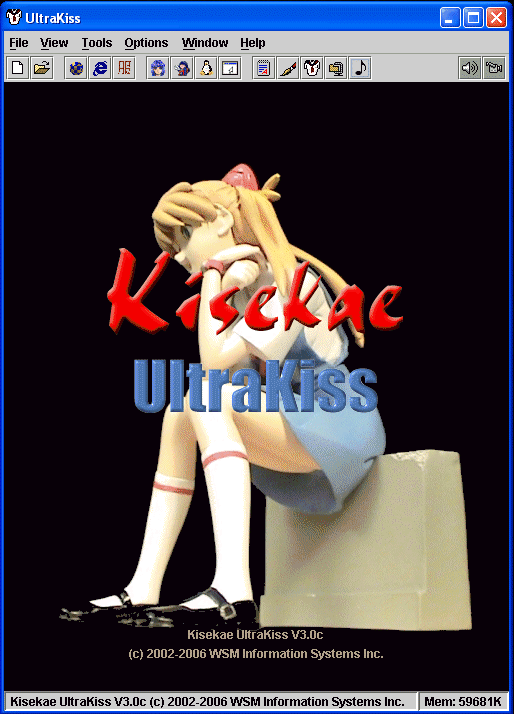
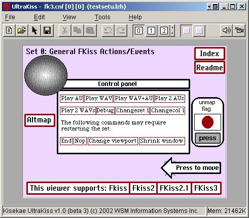
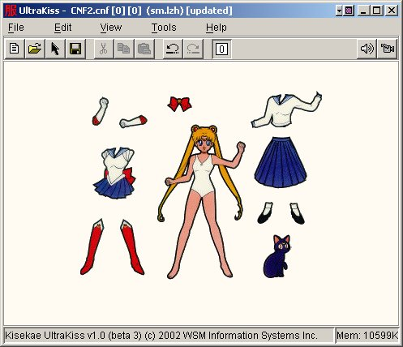

Welcome to the UltraKiss program documentation. To open an online book, choose a book from the Contents page in the upper left of the Help Viewer. Click the book icon to expand the book topics. Then, click a topic to view it.
Kisekae UltraKiss is a full featured development environment for creating, editing and displaying KiSS data sets. This document provides reference material for the various commands and options available within the UltraKiss program.
The UltraKiss main program screen is shown in Figure 1. The UltraKiss program uses standard menu commands to load files, set program options, select integrated tools, and display online help.

Figure 1. UltraKiss Main Screen
The UltraKiss window frame has a title bar that shows the program name and other attributes of the currently loaded KiSS data set. A standard menu is used to select program functions and options. An optional toolbar can be used to select commonly used functions from the program menu. The main panel area of the window shows the Kisekae UltraKiss logo. An optional status bar at the bottom of the window shows the program copyright information and other useful information.
UltraKiss loads and executes KiSS sets. Figure 2 shows the Kisekae UltraKiss program window after a test data set has been loaded. This set was constructed to exercise various features and capabilities of the Kisekae Set system.

KiSS data sets are displayed in the main panel area of the UltraKiss window. Once a set is loaded the user interacts with the objects on the screen using the mouse and keyboard.
The window title bar shows the name of the data set configuration file and the name of the KiSS data set file. In Figure 2, the KiSS set was loaded from the file named testset.lzh and the configuration element was named fk3.cnf. The UltraKiss program menu and tool bar reflect the context of the currently loaded KiSS set. UltraKiss has commands to facilitate manipulating KiSS data. For example, the tool bar can be used to switch between different KiSS page sets or color sets. Page set buttons are numbered on the tool bar and color set buttons show the background color of the palette. This data set is currently displaying page set 0 and color set 0.
The test set shows buttons and objects that exercise various system functions. The KiSS data set author has defined event actions for many objects on the screen. If the user clicks the mouse while over such an object programmed event actions will occur. UltraKiss supports all program event options defined by the FKiSS 1, FKiSS 2, FKiSS 2.1, FKiSS 3, FKiSS 4 and the new FKiSS 5 UltraKiss specifications.
Figure 3 shows one page of another typical KiSS data set. This set is a reproduction of Sailor Moon from the Japanese animation series. Various doll clothes are shown. The mouse, when placed over a costume article will change to a hand cursor as a visual indicator that the object can be picked up and moved on the screen. If the set visible area exceeds the current window size scroll bars will appear as required. Dragging an object will automatically scroll the window. Note that this data set is currently displaying page set 0 and no color sets exist for this data set.

You can use the Kisekae UltraKiss viewer to interact with your KiSS data set. Try different costumes for your doll and explore the different color sets and page sets that may be defined within the data set. Most importantly, have fun!
Next Document: Menu Commands
Copyright (c) 2002-2023 William Miles